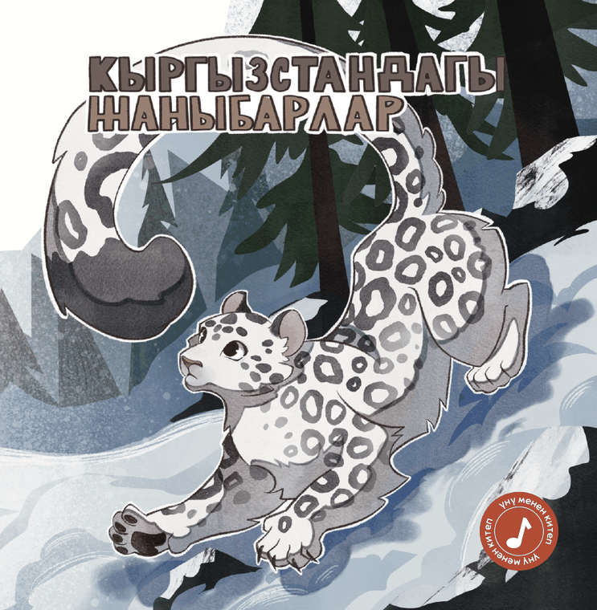
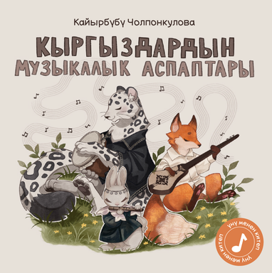

Книги, которые передают миру мелодии национальных инструментов и звуки животных Кыргызстана
Мы — небольшое издательство детских книг в Кыргызстане. В 2026 году мы выпустили две книги — «Животные Кыргызстана» и «Музыкальные инструменты кыргызского народа» — каждая построена вокруг звуков, историй и мастерства кыргызской культуры.


В 2026 году мы издали две детские книги на кыргызском языке
С начальным тиражом в 1000 экземпляров каждая, обе книги знакомят юных читателей с местными животными и традиционными инструментами — через авторские стихи, подлинные звуки и яркие иллюстрации.
О книгах
Познакомьтесь с десятью животными Кыргызстана из книги «Животные Кыргызстана» и восемью традиционными инструментами из книги «Музыкальные инструменты кыргызского народа».
Подробнее о книгах →О нас
Познакомьтесь с основательницами, поэтами, иллюстраторами и собирателями звуков, которые создали эти книги.
Познакомиться с командой →Где купить
Узнайте, как заказать книги — онлайн, в Бишкеке или через оптовых и международных партнёров.
Способы покупки →Помогите нам развивать издательское дело на кыргызском языке
Присоединяйтесь к нашей Ассоциации креативного книгоиздания или сотрудничайте с нами как иллюстратор или носитель традиционных знаний в будущих проектах.